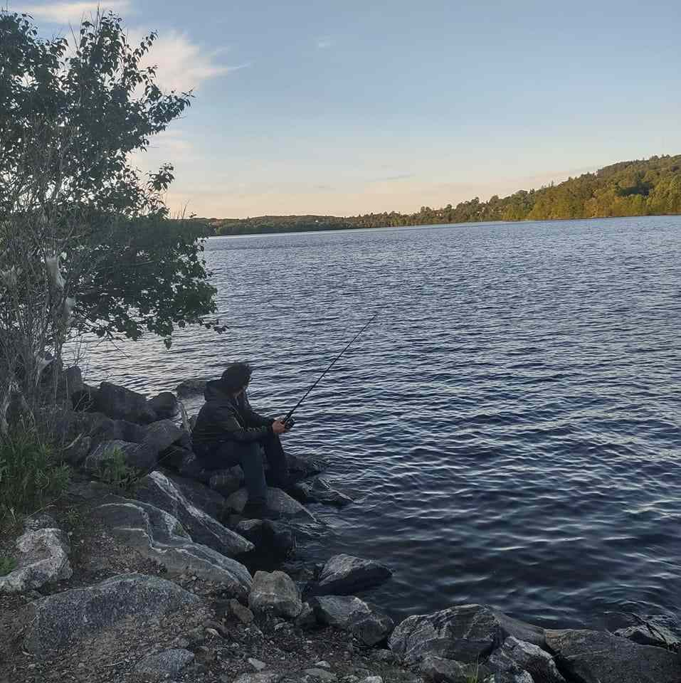
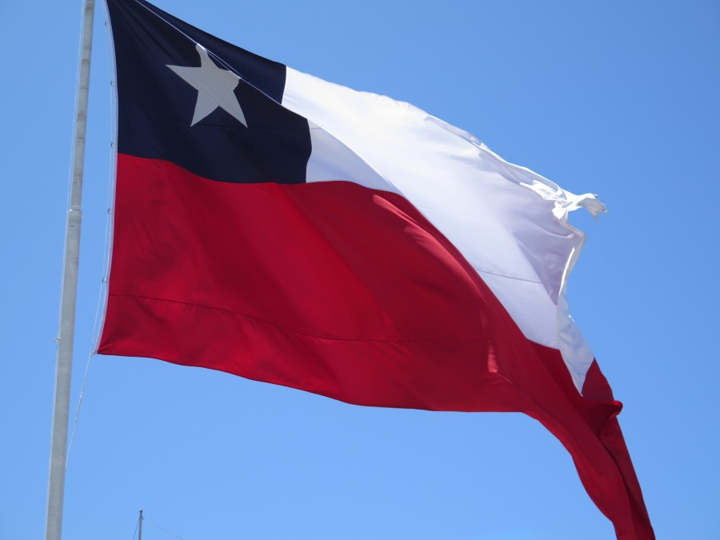

Misael Castro
About me
My name is Misael Castro, Im from Chile but I movet to Canada a couple years ago, I love fishing, camping, hiking and cooking. I love learning and Im looking forwar to improve my coding skills and become a software developer.

Valparaiso Chile
THis is where I born, a city beside the ocean, where I used to eat tons of fish, that city is sourunded ny hills forming a U shape, that makes a lot of wind on that city, for several years, Valaraiso was the principal port of Chile
